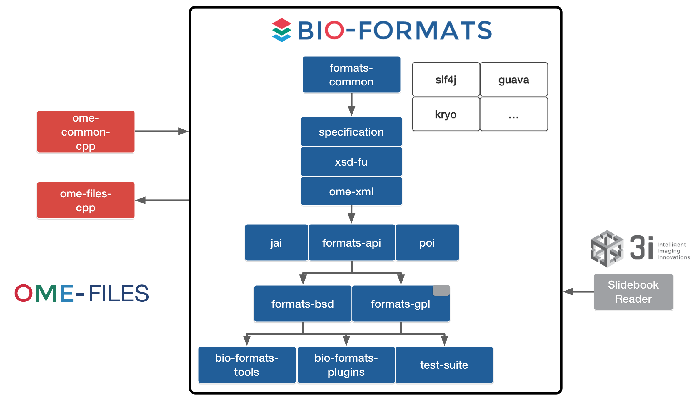
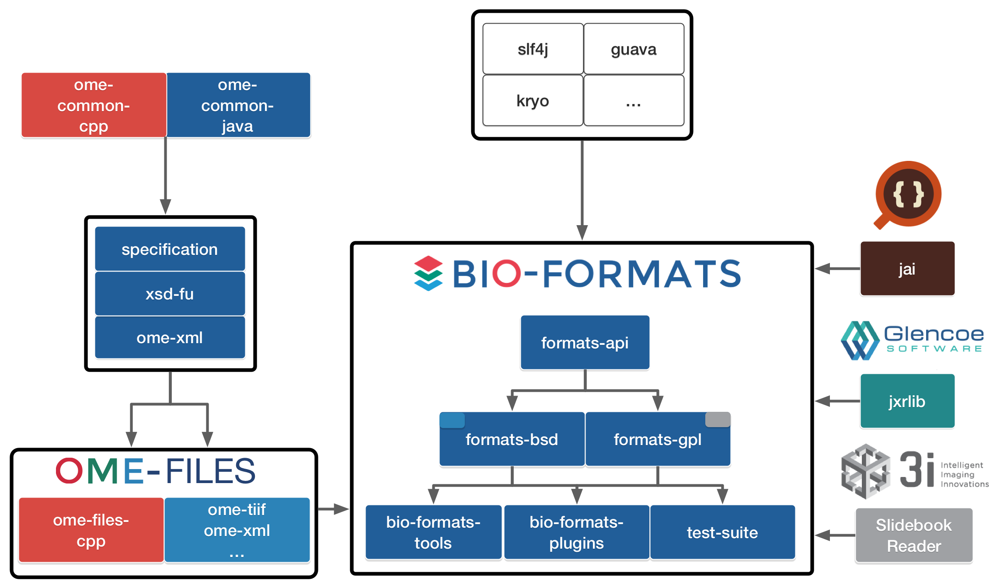

Bio-Formats 5.3.0
Development plan
Oct 4, 2016
Bio-Formats 5.2: status
Aug 2016: 5.2.0 release (2016-06 model)
Sep-Oct 2016: 3 patch releases (bug fixes, IDR backporting)
Bio-Formats 5.3.0 proposal
Versioning
Architecture
API
Versioning: current status
Model/API breaking changes can be carried out in minor releases e.g. Bio-Formats 5.2.0
Consumers (e.g. OMERO 5.3.0-m2) need corresponding breaking changes
Release lifecycles: OMERO/Bio-Formats
Versioning: proposal
Move to
semantic versioning
Major version X MUST be incremented if any backwards incompatible changes are introduced to the public API.
Minor version Y MUST be incremented if new, backwards compatible functionality is introduced to the public API.
Bio-Formats 5.3.0: API additions only
OMERO 5.3.0: seamless transition to Bio-Formats 5.x
Integration
Upcoming use cases
Glencoe Software: JPEG-XR library
Heterogenous metadata (MULTIMOT, Wellcome)
High-performance format containers
Integration: limitations
Monolithic block

Integration: proposal
Components re-architecture

Tiling API: status
Strong support for reading tiles
Need for greater transparency, documentation and samples in tiled writers
Few writers support complete tiling implementation (incl. TIFF)
Tiling API: proposal
API extension to improve usability of tiled Java writers
New methods in IFormatWriter to set/read the tile size
New options to enable/disable tiling by default
Expanded test coverage, documentation and samples
Options API: proposal
API to pass options using key/value pairs
Use cases
IDR: memoization
Tile vs non-tile writing
Reader-level options
Flexible, give more user control
Roadmap
2 months (November 2016)
Milestone 1: Architecture/integration
Milestone 2: API additions
Maintain 5.2.x line for bug fixes?